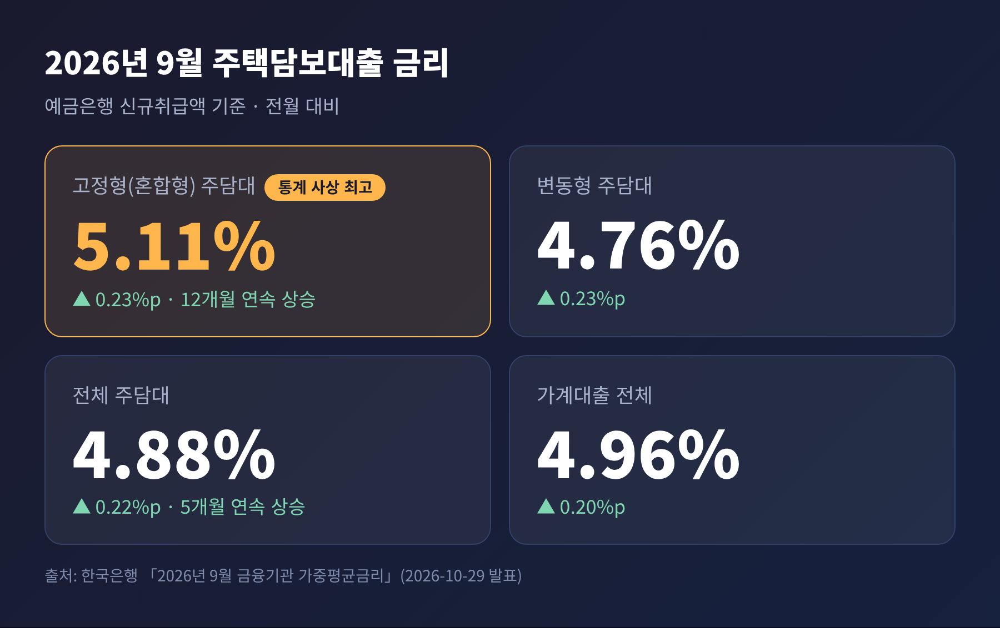
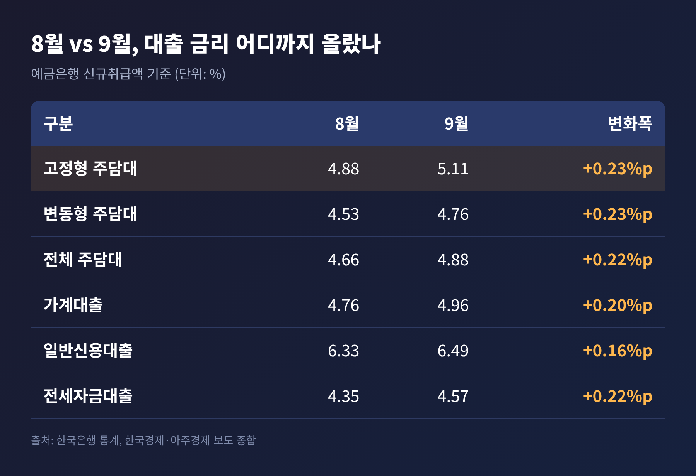
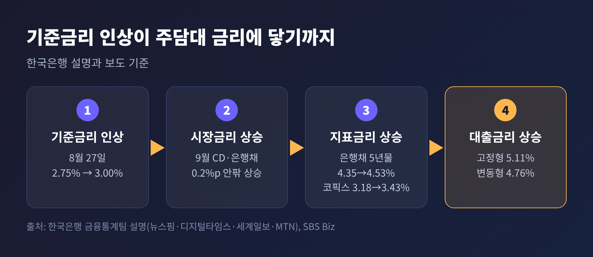
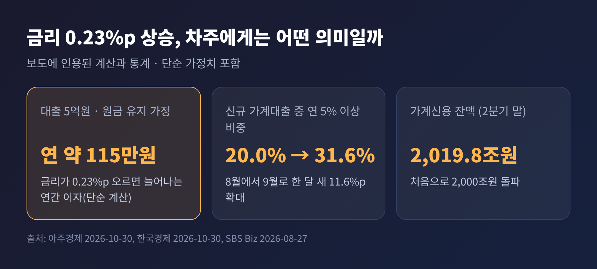
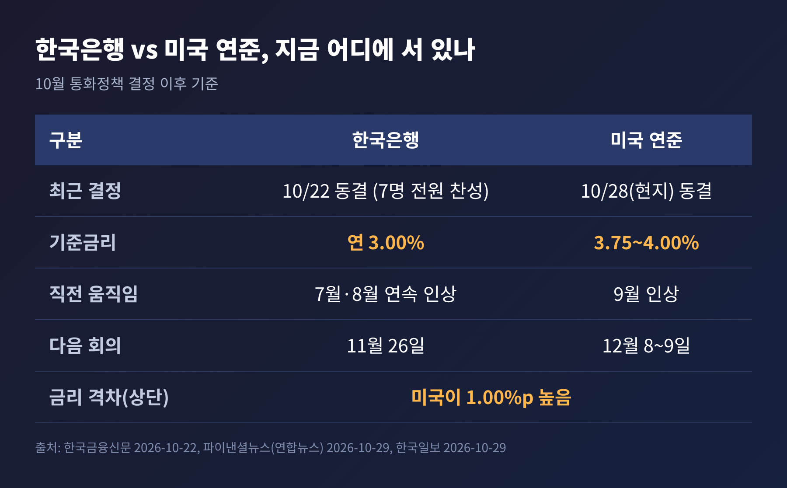
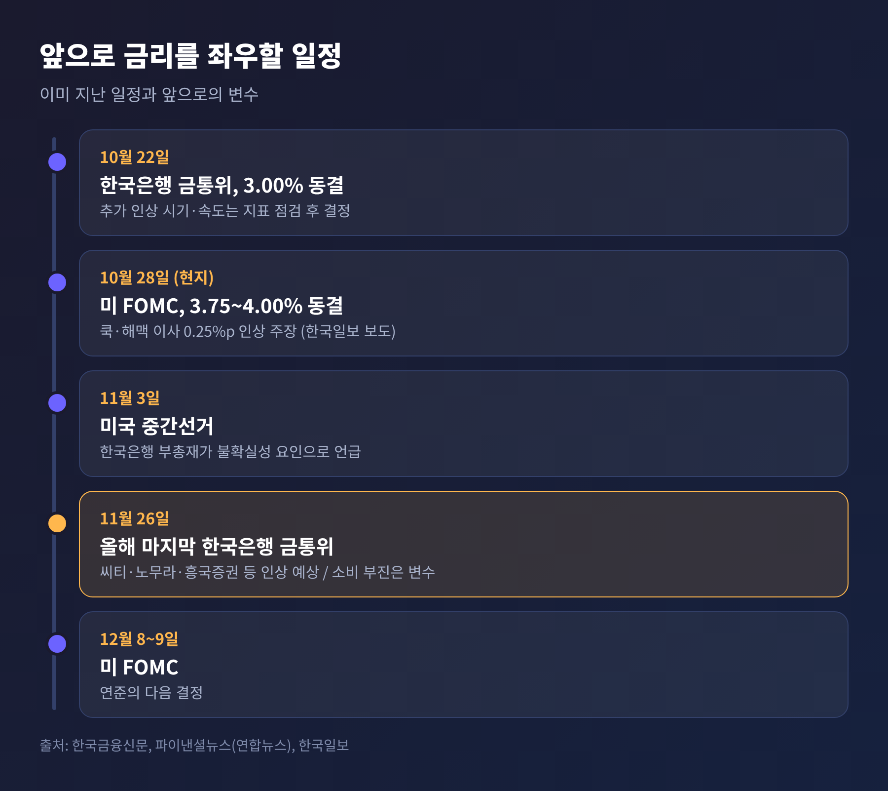

고정형 주담대 금리 사상 첫 5% 돌파, 5개월째 상승 원인과 전망

이번 글에서는 시중은행 고정형(혼합형) 주택담보대출 금리가 처음 5%를 넘어선 소식을 정리해 보겠습니다. 한국은행이 10월 29일 발표한 9월 통계에서 고정형 주담대 금리는 5.11%, 전체 주담대 금리는 4.88%로 5개월 연속 올랐습니다. 원인은 시장금리 상승이 가장 크고, 변수는 11월 26일 금융통화위원회입니다.
3줄 요약
- 9월 고정형 주담대 금리는 5.11%로 2013년 1월 통계 집계 이후 처음 5%를 넘었습니다.
- 8월 기준금리 인상 뒤 은행채·CD 금리가 0.2%p 안팎 오른 것이 주된 이유입니다.
- 10월 들어 은행채 금리는 내렸지만, 11월 금통위의 추가 인상 여부가 다음 방향을 정할 변수입니다.
■ 무슨 일이 있었나: 한국은행 9월 통계
한국은행의 「2026년 9월 금융기관 가중평균금리」(예금은행 신규취급액 기준)가 10월 29일 공개되었습니다.
핵심 수치는 다음과 같습니다.
- 고정형 주담대 금리: 5.11% (전월 대비 0.23%p 상승)
- 변동형 주담대 금리: 4.76% (0.23%p 상승)
- 전체 주담대 금리: 4.88% (0.22%p 상승, 5월 이후 5개월 연속 상승)
- 가계대출 금리: 4.96% (0.20%p 상승)

고정형 5.11%는 한국은행이 고정형과 변동형을 나누어 집계하기 시작한 2013년 1월 이후 가장 높은 수치입니다. 고정형은 지난해 10월부터 12개월 연속 올랐습니다. 전체 주담대 금리는 2012년 4월(4.94%) 이후 약 14년 5개월 만의 최고 수준입니다.
고정형과 변동형의 차이도 눈여겨볼 만합니다. 지금은 고정형이 변동형보다 0.35%p 높습니다. 같은 대출이라면 5년간 금리를 묶어 두는 대가로 더 비싼 이자를 내야 하는 구조입니다.
■ 왜 중요한가: 새 대출의 상당수가 5%대로 올라왔습니다
평균 금리보다 분포가 더 많은 것을 말해 줍니다. 한국경제 등이 전한 통계를 보면, 신규 가계대출 중 연 5% 이상 비중은 8월 20.0%에서 9월 31.6%로 뛰었습니다. 4.5% 이상 비중은 53.6%에서 70.1%로 늘었습니다. 한 달 사이에 새 가계대출 열 건 중 일곱 건이 4.5%를 넘긴 셈입니다.
8월에는 5% 이상 대출이 다섯 건 중 한 건이었습니다. 9월에는 세 건 중 한 건으로 늘었습니다.
기존 차주도 무관하지 않습니다. 잔액 기준 주담대 금리는 4.22%에서 4.26%로, 가계대출 금리는 4.52%에서 4.58%로 올랐습니다. 신규 취급 금리보다 느리지만, 변동금리 대출이나 금리를 새로 정하는 시점이 돌아오는 대출부터 시장금리가 반영됩니다.

■ 배경 1: 기준금리 인상이 시장금리를 밀어 올렸습니다
주담대 금리 상승의 출발점은 기준금리입니다. 한국은행은 7월에 이어 8월 27일에 기준금리를 연 2.75%에서 3.00%로 0.25%p 올렸습니다. 연속 인상은 2022년 4월부터 2023년 1월까지 이어진 7연속 인상 이후 3년 7개월 만이었습니다. 높은 물가와 강한 성장세에 선제적으로 대응한다는 판단이었습니다.
그 뒤 시장금리가 반응했습니다. 한국은행 김성준 금융통계팀장은 8월 인상 이후 CD와 은행채 금리가 9월에 0.2%p 안팎 올랐다고 설명했습니다. 그리고 이번 상승의 가장 큰 요인으로 시장금리를 꼽았습니다.
고정형 주담대는 은행채 5년물(AAA) 금리를 기준으로 삼습니다. 이 금리는 9월 평균 4.35%에서 4.53%로 올랐습니다. 변동형이 따르는 신규취급액 기준 코픽스는 3.18%에서 3.43%로 0.25%p 올랐습니다. 한국은행은 지난해 10월부터 올해 9월까지 은행채 5년물이 1.54%p, 고정형 주담대가 1.46%p 올랐다고 밝혔습니다. 채권 금리 상승이 대출 금리에 거의 그대로 얹힌 것입니다.

■ 배경 2: 예금금리 경쟁과 가계대출 관리
시장금리만이 전부는 아닙니다. 은행들이 수신자금을 확보하려고 예금금리를 올린 점도 대출금리에 부담을 줍니다. 9월 저축성수신금리는 3.45%로 0.24%p 올랐고, 연 4% 이상 정기예금의 비중은 0.5%에서 10.6%로 커졌습니다.
가계대출 관리도 일부 영향을 줬을 수 있습니다. 한국은행은 가산금리 조정과 가계대출 관리 강화가 영향을 줬을 가능성을 언급하면서도, 9월에는 시장금리가 가장 큰 요인이라고 선을 그었습니다. 규제가 금리를 끌어올렸다고 단정하기는 어렵다는 이야기입니다.
금융당국의 기조는 10월 15일 가계부채 점검회의에서 확인할 수 있습니다. 6.27 대책과 8.13 종합 금융대책을 단계적으로 시행 중입니다. 올해 가계대출 증가율 목표는 1.5%에서 3.0%로 올렸고, 이주비·중도금·잔금대출 같은 집단대출은 따로 관리하기로 했습니다. 9월 전 금융권 가계대출은 2.2조원 줄어 올해 처음 순감소했습니다. 다만 주담대는 3.3조원 늘었고, 당국은 집값 상승 기대가 리스크로 남아 있다고 평가했습니다.
■ 차주와 부동산 시장에 미치는 영향
금리 0.23%p는 작아 보이지만 대출 규모가 크면 체감이 달라집니다. 아주경제는 대출 5억원을 원금 변동 없이 유지한다고 가정할 때, 금리가 0.23%p 오르면 연간 이자가 단순 계산으로 약 115만원 늘어난다고 짚었습니다.
가계 전체로 보면 규모가 더 큽니다. SBS Biz는 8월 인상 당시 주담대 금리가 0.25%p 오르면 연간 이자 부담이 약 1조 8천억원 늘어나는 것으로 추산된다고 전했습니다. 가계신용 잔액은 올해 2분기 말 처음 2,000조원(2,019조 8천억원)을 넘었습니다.

선택의 고민도 커졌습니다. 아주경제가 전한 은행 관계자들의 이야기는 엇갈립니다. 한 시중은행에서는 고정형 문의가 늘지만 당장 금리가 낮은 6개월 변동형을 택하는 차주가 더 많다고 했습니다. 다른 은행에서는 금리가 더 오를 것으로 보고 5년 고정을 고르는 고객이 늘었다고 했습니다. 신규 주담대에서 고정형 비중은 34.2%로 1.1%p 낮아졌지만, 가계대출 잔액 중 고정형 비중은 24.0%로 두 달 연속 올랐습니다.
대출 실행 후 약 3년이 지나면 중도상환수수료 부담이 사라집니다. 그래서 낮은 변동금리로 시작해 갈아타려는 수요도 있습니다. 하지만 대환이 늘 유리한 것은 아닙니다. 새 상품의 금리와 한도를 함께 비교하셔야 합니다.
부동산 시장은 두 방향의 힘을 받습니다. 이자 부담은 수요를 누르는 요인입니다. 한편 한국은행은 10월 통화정책방향문에서 수도권 주택시장과 가계부채로 인한 금융불균형 위험에 계속 유의해야 한다고 밝혔습니다. 가격이 오를 것이라는 기대가 남아 있다는 뜻으로 읽힙니다.
■ 전망: 11월 26일 금통위와 지표금리의 줄다리기
앞으로를 가를 변수는 크게 둘입니다.
첫째는 기준금리입니다. 한국은행은 10월 22일 금통위에서 위원 7명 전원 일치로 기준금리를 연 3.00%에 동결했습니다. 다만 추가 인상의 시기와 속도를 점검해 정하겠다는 방침은 유지했습니다. 그 뒤 발표된 3분기 실질 GDP는 전기 대비 1.0%로, 한국은행의 8월 전망(0.3%)을 크게 웃돌았습니다. 9월 소비자물가는 2.9%였습니다.
미 연준은 10월 27~28일 FOMC에서 기준금리를 3.75~4.00%로 동결했습니다. 한국과의 금리 격차는 상단 기준 1.00%p입니다. 워시 의장의 발언을 두고는 추가 인상 가능성을 열어 두었다는 해석과 시그널이 뚜렷하지 않았다는 해석이 함께 나옵니다. 다음 FOMC는 12월 8~9일입니다.

이런 흐름 속에서 일부 이코노미스트는 11월 26일 금통위의 인상을 예상합니다. 씨티는 11월과 내년 2월에 각각 0.25%p 인상해 최종금리가 3.50%에 이를 가능성을 제시했습니다. 흥국증권도 11월 인상을 예상했습니다. 반면 3분기 민간소비는 전기 대비 0.2% 줄어 2022년 4분기 이후 처음 감소했습니다. 노무라증권은 소비 부진이 이어지면 인상 사이클이 일찍 끝날 수 있다고 짚었습니다. 전망은 하나로 모이지 않았습니다.
둘째는 지표금리입니다. 반대 방향의 신호도 있습니다. 은행채 5년물 금리는 10월 23일까지 0.16%p 내렸고, 아주경제에 따르면 10월 29일 기준 4.2% 수준입니다. 한국은행 김성준 팀장은 지표금리를 따라가면 대출금리가 내려갈 가능성이 있다고 봤습니다. 다만 은행의 가산금리 조정이 변수여서 월말 수치를 더 확인해야 한다고 덧붙였습니다. 금융권 관계자도 은행채 금리가 내렸다고 대출금리가 같은 폭으로 내려가지는 않는다고 말했습니다.

정리하면 이렇습니다. 시장금리가 내려가는 신호는 있으나, 11월 금통위에서 인상이 나오면 다시 올라갈 수 있습니다. 어느 쪽으로 기울지는 지금으로서는 알 수 없습니다.
■ 정리하며
마지막으로 한 가지만 덧붙이겠습니다. 이번 통계는 9월 한 달의 신규 취급 금리입니다. 다음 달 공개될 10월 통계에서 은행채 금리 하락이 얼마나 반영되었는지 확인할 수 있습니다. 한 달 수치로 추세를 단정하기보다 지표금리와 금통위 결과를 함께 보시길 권합니다.
고정형 5%는 하나의 기록이지만, 결국 남는 것은 "금리는 정책이 움직이고, 대출금리는 시장이 뒤따른다"는 단순한 구조입니다.
대출을 받았거나 앞두고 계신다면, 오늘의 5.11%보다 내 대출의 금리 재산정 시점과 상환 여력을 먼저 점검해 보시기를 바랍니다.
본 글은 공개된 보도와 통계를 정리한 정보 제공용 해설이며, 특정 금융상품의 가입이나 투자를 권유하는 내용이 아닙니다. 대출·투자 결정은 본인의 상황과 금융기관 상담을 바탕으로 하시기 바랍니다.
출처: 한국은행 「2026년 9월 금융기관 가중평균금리」 (뉴스핌·한국일보·디지털타임스·세계일보·MTN·SR타임스·한국경제 2026-10-29~30 보도), 아주경제 2026-10-30, 파이낸셜뉴스(연합뉴스) 2026-10-29, 한국금융신문 2026-10-22, SBS Biz 2026-08-27, 대한뉴스 가계대출 동향(2026-10)